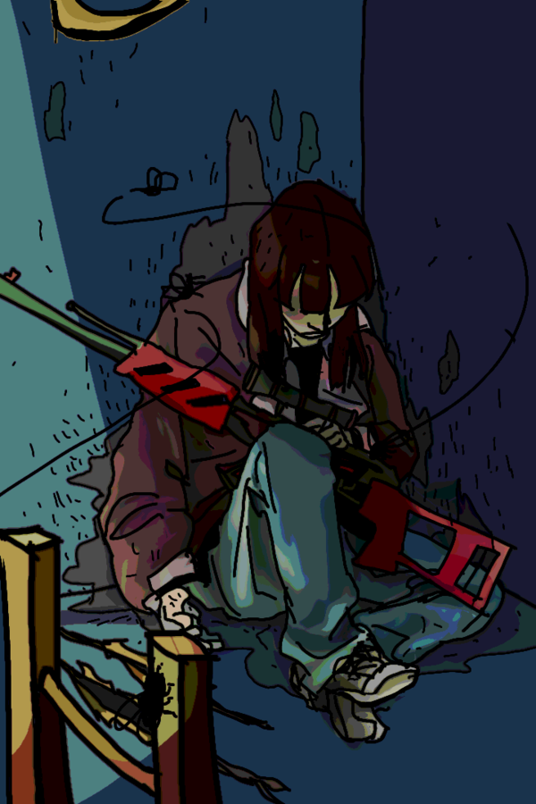

Rooms[누르면 이동][접기/열기]
숙소
자판기
식품저장고
폭탄저장고
발전기
압축기
지하탐색기
폐쇄된 광산
폐쇄된 고급광산
금고
라디오
시체
벙커노트
탈출 포드
산인나빳어
열람 방법[접기/열기]
♥: 체력+
♡: 체력-
^^: 다른 캐릭터에게 사용 가능
'죽기 전에 꼭!' 목록에서 방으로 이동할 수 있어요
행동 중 뽑기가 필요할 때는 여기서!
각 방 설명마다 적절한 버튼이 준비되어 있어요
숙소
*문이 안잠긴다...
-자기(1턴): (♥♥,걸음수 초기화)
눈을 감고 있어야 해서, 아이템을 뺏길 수 있다
-숙소청소(정리솔):
청소하면서 굴러다니는 아이템을 찾아보자(줍줍 1회)
자판기
*돈없으면 꺼져;;
-랜덤 뽑기(돈) :
먼지가 많아 안이 보이지 않는다.
물건 중 랜덤히 1개 획득
-제대로 뽑기(돈, 정리솔):
자판기를 청소했다. 물건 중 원하는 것 1개 획득
-자판기 부수기(2턴,♡,다이너마이트 1개당 1턴 감소):
자판기를 부숴 안에있는 아이템이나 돈을 얻는다.
자판기를 부수는 중에는 움직이거나 체력을 회복할수 없다.
(단 '죽었을때도 사용가능'한 것은 예외.)
2턴이 차기 전에 죽으면 취소된다.
부서진 자판기에서는 물건을 뽑을 수 없다.
판매 목록
오래된 음료수(♡)
음료수(♥)
면도칼(♡, ^^)
로프
배터리
정리솔
당첨맥주(불굴의 의지)
식품 저장고
*맛있는건 털린지 오래.
한 식품저장고는 4회까지 사용가능.
-식량 확보(1턴):
썩은 식량(♡), 식량(♥) 중 하나가 나온다
폭탄 저장고
*한 폭탄 저장고에는 총 6개의 다이너마이트가 있다.
-다이너마이트(1턴)
-상자 열기 : 폭발(♡), 다이너마이트 중 1.
턴을 소모하지 않지만, 한턴 안에 여러번 열면 위험도 증가.
발전기
*손으로 돌려주세요
-배터리 뽑기(돈) : 배터리 1 획득
-전기 끊기(다이너마이트, 각 발전기당 1회) :
4턴동안 자신만 움직인다. 다른 사람들은 볼 수 없다.
압축기
-압축: (배터리1개 넣으면 2회 충전)
압축 레시피
석탄3 => 다이아
음료수2 => 다음 단계 음료수
다이너마이트5 => 슈퍼폭탄
로프2 => 어디로든 로프
정리솔2 => 최첨단 탐사용 솔
면도칼2,석탄1 => 암살용 단검
은1,정리솔1,로프1,석탄1 => 불총
권총1,석탄2=>불총
아무 음료수1, 다이너마이트1 => 33폭탄
음료수1, 금, 다이너마이트1 => 55폭탄
썩은 음식2, 로프2, 면도칼1, 음료수1 => 응급상자
권총1,다이너마이트1 => 조립식저격소총
이외 캐릭터 전용 압축법.
지하 탐색기[눌러!]
*지하 탐색의 정석
x위치,y위치 중 하나를 정할 수 있다.
(최초 2회 사용 이후 배터리 1개당 2회 충전.)
폐쇄된 광산
*벙커에 광산을 만드는 신개념 설계
*6회 채굴하면 무너짐
-채광(1턴) : 석탄, 은, 금, 다이아몬드 중 1 획득
-뻥(다이너마이트): 금, 다이아 중 1 획득
폐쇄된 고급광산
*놓칠 수 없는 광맥을 발견했다
*4회 채굴하면 무너짐.
-채광(1턴) : 은, 금, 다이아 중 1 획득
-드릴작동(배터리) : 폭8(♡), 다이아 중 1 획득
-뻥(다이너마이트): 다이아 획득

환전소
*광물이 필요할지 돈이 필요할지 모른다.
환전소는 멀다. 환전은 신중히.
-무인 환전: 은(1), 금(2), 다이아(3)=>돈
금고
*금고털이범이 되었습니다.
-금고털기(2턴,다이너마이트1개당 1턴 감소.):
다음 중 1 획득
남의 귀중품 엿보기
암살용 단검(♡♡♡, 1회, ^^)
조립식 저격소총(♡, 3회, ^^)
응급키트(♥♥♥, ^^)
지상의 사진(불굴의 의지),로프3
다이아
고장난 라디오
*옛날 방사능 측정기처럼 생겼지만 복고풍일 뿐이다.
*배터리 1개당 2회 작동
-바깥뉴스 듣기(1턴) : 불굴의 투지(70% 확률)
-노래 듣기(1턴) : (♥)

시체
*말이 없다. 죽은 듯 하다.
-시체 조사(♡,1턴) : 산 사람은 살아야죠.
소지품 중 1 획득
권총(♡, 2회, ^^)
불총(♡♡)
식량(♥)2
로프4
돈4

벙커노트
*최하층, 벙커 설계자의 방에 있는 설계노트.
이걸 보지 않으면 문 여는 법이나
슈퍼폭탄 설치하는 법을 알 수 없다.
-중요 정보 얻기[눌러!]
:한 칸에 원하는 방을 배정.(탈출포드 제외)(1턴)
-비상금의 위치 : 돈5,지혈제 (1턴)
탈출포드
*벙커 생존팀의 알파이자 오메가
-지상을 향해 : 열쇠 획득 (1턴,배터리)